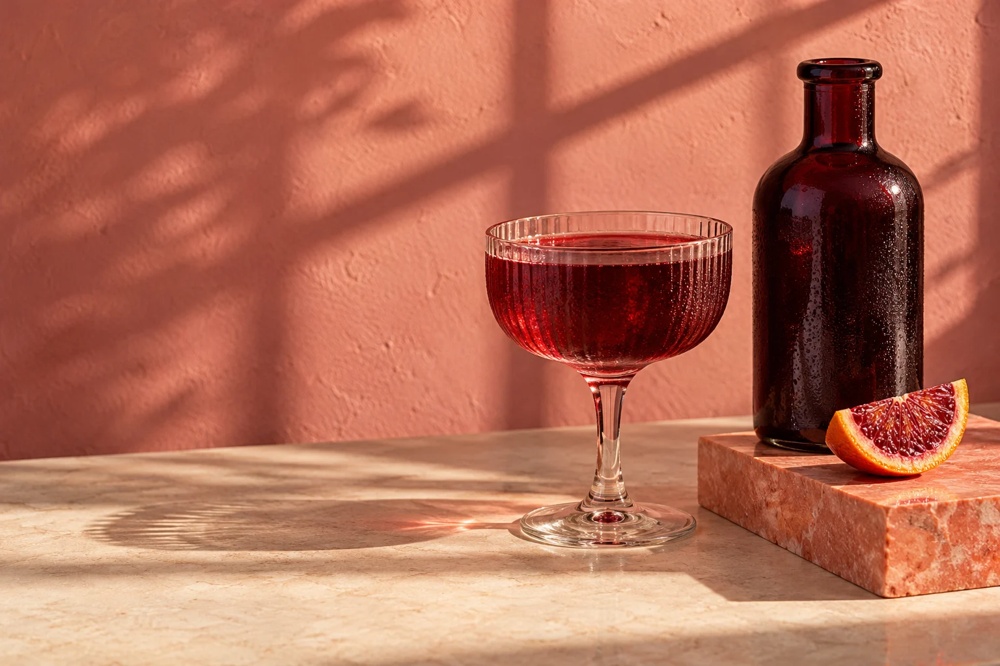
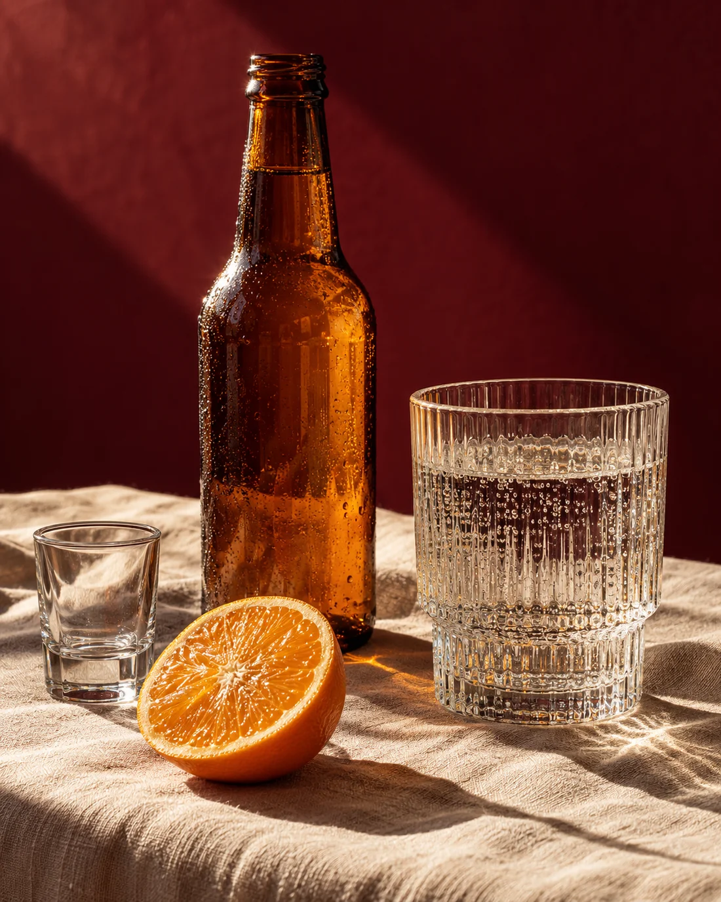

Whiskey & spirits
Minuman hasil distilasi, dengan bahan dasar dan proses yang membentuk karakter berbeda.
Kenali kategorinya ↗Coba “VIBE”, “whiskey”, atau “soda”.
Sebuah ruang untuk mengenal
Dari whiskey hingga soda. Temukan cerita, bahan, dan karakter di balik setiap botol.

Ilustrasi suasana TIBAKenali jenisnya. Baca karakternya. Temukan perbedaannya.
Deskripsi singkat bersifat informatif. Karakter dapat berbeda menurut varian; periksa label kemasan untuk informasi produk yang spesifik.
Cerita TIBA
Di balik bentuk botol dan nama yang familier, setiap minuman punya asal dan proses yang berbeda. TIBA merangkumnya dengan bahasa yang sederhana.
Mulai dari jenisnya
Satu kategori, banyak karakter.
Minuman hasil distilasi, dengan bahan dasar dan proses yang membentuk karakter berbeda.
Kenali kategorinya ↗Dari anggur lokal hingga nama yang tumbuh bersama cerita sebuah kota.
Kenali kategorinya ↗Hasil fermentasi serealia. Malt, hop, dan ragi memberi ciri pada setiap jenisnya.
Kenali kategorinya ↗Kenali perbedaan air berkarbonasi, tonic, dan soda dengan berbagai rasa.
Kenali kategorinya ↗Catatan visual tentang botol dan perangkat minum.
Bentuk gelas juga bagian dari cerita minuman.
Dari bening hingga amber, tiap tampilan memberi petunjuk.
TIBA adalah identitas contoh untuk sebuah katalog informatif. Halaman ini menjelaskan kategori dan karakter minuman, tanpa transaksi atau pemesanan.
Whiskey dan vodka termasuk spirit yang melalui distilasi. Bir merupakan minuman fermentasi. Bahan, proses, dan karakter masing-masing berbeda.
Tidak selalu. Tiap varian dapat memiliki bahan, rasa, dan kadar alkohol berbeda. Deskripsi di sini adalah pengantar; label resmi tetap menjadi rujukan untuk informasi spesifik.
Katalog ini ditujukan khusus untuk pengunjung berusia 21 tahun ke atas. Informasi merek disajikan sebagai pengenalan produk dan bukan anjuran untuk mengonsumsi alkohol.